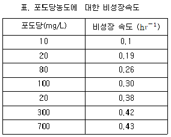
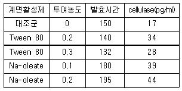
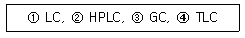

바이오화학제품제조기사 (2008-05-11 기출문제)
1과목: 미생물공학
1. 세포벽 생합성을 저해하는 작용기작을 갖는 항생물질은?
- Streptomycin
- Chloramphenicol
- Penicillin
- Erythromycin
(정답률: 100%)

2. 다음 중 베타-lactam계 항생물질은?
- Bacitracin
- Erythromycin
- Kanamycin
- Cephalosporin C
(정답률: 67%)
3. 발효 균주의 개량방법으로 옳지 않은 것은?
- Protoplast fusion
- UV 또는 화학적 변이제의 이용
- 항생제 처리
- 재조합 기술
(정답률: 39%)
4. 발효배재 성분 중에 비타민과 같이 열에 의해 쉽게 변화되는 물질이 존재할 때 무균배지를 준비하는 방법으로 가장 적절한 것은?
- 오존 등의 가스로 살균한다.
- 발효배재를 전부 여과한다.
- 저온살균한다.
- 비타민은 분리하여 여과하고 나머지는 가열살균하여 혼합한다.
(정답률: 50%)
5. 보통 염색체의 외부에 존재하는 자율적이며 자기복제를 하는 이중 가닥의 DNA는?
- 플라스미드(plasmid)
- 프로파지(prophage)
- 용원성 파지(temperate phage)
- Hfr 균주(High frequency recombination strain)
(정답률: 93%)
6. 식품, 제약 및 화장품에 많이 이용되고 있는 구연산의 대표적인 생산균주가 아닌 것은?
- 페니시리움 속 진균
- 대장균
- 아스퍼질루스 속 진균
- 캔디다 속 효모
(정답률: 82%)
7. 요구르트 제조에 이용되는 미생물은?
- 대장균
- 젖산균
- 방선균
- 고초균
(정답률: 90%)
8. Pseudomonas putida를 포도당이 함유된 배지에서 배양하고, 각 포도당 농도에 대해서 다음 표와 같은 비성장속도를 얻었다. 비성장속도가 포도당 농도에 대해 Monod model을 따른다고 했을 때, 이 균주의 계산된 최대비성장 속도(茉max)는 얼마인가?

- 0.51
- 0.48
- 0.43
- 0.39
(정답률: 60%)
9. 세파로스포린(Cephalosporin) 항생제를 생산하는 미생물에 해당하는 것은?
- 대장균
- 비루스
- 효모
- 곰팡이
(정답률: 65%)
10. 다음 중 펩톤의 원료로 사용되지 않은 것은?
- meat
- 카제인
- soy meal
- 당밀
(정답률: 92%)
11. 옥수수 전분으로부터 과당(fructose)을 제조할 때에 이용되지 않은 효소는?
- 알파 아밀라제
- 글루코 아밀라제
- 글루코스 이소머라제
- 셀루라제
(정답률: 62%)
12. Trichoderma viride로부터 cellulase를 생산하기 위하여 플라스크 회분배양을 행하고 있다. 계면활성제가 생산성에 미치는 영향을 조사하기 위하여 다름 표와 같이 실험하였다. 발효 생산성을 최대화하기 위해서는 어떤 계면활성제를 어떤 농도로 첨가하여야 하는가?

- Na-oleate 0.2%
- Na-oleate 0.1%
- Tween 80 0.2%
- Tween 80 0.3%
(정답률: 73%)
13. Penicillin G 발효에 대한 설명으로 틀린 것은?
- Penicillin 속 미생물에 의하여 생산된다.
- 생산수율을 높이기 위하여 glucose 와 같이 쉽게 이용할 수 있는 탄소원을 과량 공급한다.
- 높은 수율을 얻기 위하여 산소를 충분히 공급하여야 한다.
- 생성된 항생물질은 균체 외로 유리된다.
(정답률: 알수없음)
14. 배지 조제시 살균에 의해 탄수화물의 안정성이 변화하는 이유에 대한 설명으로 옳은 것은?
- 높은 온도와 압력에서 탄수화물의 점성이 변하기 때문
- 탄수화물이 분해되어 미생물의 생육에 영향을 미치기 때문
- 탄수화물이 암모늄 이온, 아미노산과 반응하여 질소화합물을 만들기 때문
- 높은 온도와 압력 하에서 탄수화물이 침전이 일어나기 때문
(정답률: 44%)
15. 발효산물은 생산시기와 세포서장시기에 따라3가지로 분류되는데 다음 중 non-growth associated에 해당하는 것은?
- 항생제
- 구연산
- 에탄올
- SCP(single cell protein)
(정답률: 73%)
16. 다음 중 초산 발효를 위한 배양조건으로 가장 중요한 것은?
- 이산화탄소 공급
- 질소 공급
- 산소 공급
- 호르몬 공급
(정답률: 55%)
17. 유전자 조작된 미생물을 이용하여 제조합 단백질을 생산할 때 흔히 일어나는 유전적 불안정성에 대한 설명으로 틀린 것은?
- 플라스미드에 존재하는 복제수가 감소하는 것을 말한다.
- 미생물의 계대수가 증가하면 일어날 수 있다.
- Product의 생성이 감소하게 된다.
- 연속배양보다 회분식배양에서 잘 일어난다.
(정답률: 73%)
18. 세균을 이용한 호기적 발효로 생산되지 않는 유기산은?
- 초산 (acetic acid)
- 구연산(citric acid)
- 젖산 (lactic acid)
- 글루콘산(gluconic acid)
(정답률: 91%)
19. Molasses는 주로 어떠한 영양소의 공급원으로 사용되는가?
- 미네랄
- 인
- 산소
- 탄소
(정답률: 40%)
20. 다음 중 Operon의 구성요소가 아닌 것은?
- inducer
- promoter
- operator
- structural genes
(정답률: 62%)
2과목: 배양공학
21. 다음 중 식물세포 배양의 장점으로 가장 거리가 먼 것은?
- 제어되고 최적화된 조건 하에서의 배양이 가능하다.
- 식물 경작보다 생산 물질의 생산성과 효능이 향상 탁월하다.
- 세포주 개량, 인공종자 생산에 응용이 가능하다.
- 변형된 천연물이나 새로운 물질생산이 가능하다.
(정답률: 77%)
22. 식물세포는 병원성 곰팡이나 박테리아들의 공격으로부터 방어 메커니즘이 있다. 식물세포 배양시 곰팡이나 박테리아 세포의 벽이 부서져 생긴 물질이 존재하면 방어 메커니즘이 활성화되어 이차대산물의 생산이 증가하는데 이와 같이 역할을 하는 것은?
- 일리시터(elicitor)
- 식물호르몬(phytohormone)
- 옥신(auxin)
- 지베렐린(gibberellin)
(정답률: 알수없음)
23. 고정화세포배양에 대한 설명으로 틀린 것은?
- 고정화는 높은 세포농도를 유지할 수 있다.
- 고정화된 세포는 재사용이 가능하다.
- 고정화로서 기질이나 산물의 확산의 제한이 없어 생산성을 높일 수 있다.
- 고정화에서는 높은 희석소도에서 세포가 세출(wash-out)되는 문제가 없다.
(정답률: 75%)
24. 정상 상태의 키모스탯(chemostat) 배양의 특징을 옯게 설명한 것은?
- 배양 중간에 더 이상의 영양물질 공급이나 제거가 없는 배양이라 실험실이나 산업계에서 널리 이용된다.
- 지연기, 대수기, 정지기와 같은 세포 성자 형태를 보인다.
- 닫힌계(closed system)에서 세포 배양이 이루어진다.
- 공급배지 유량과 배양부피에 의한 희석속도에 의하여 세포의 비성장속도가 결정된다.
(정답률: 91%)
25. 유전자 조작시 대장균을 숙주(host)로 선정하는 데 있어서 장점이 아닌 것은?
- 고농도 배양이 가능하다.
- 생자속도가 빠르다.
- 간단하고 값싼 배지가 사용된다.
- 단백질을 세포밖으로 배출하지 않는다.
(정답률: 86%)
26. 회분식배양에서 지연기(lag phase)를 최소화하기 위한 조건으로 가장 거리가 먼 것은?
- 정지기의 세포 접종이어야 한다.
- 접종량이 많아야 한다.
- 접종 전에 세포들을 생장 배지에 적응시킨다.
- 활성이 있는 세포이어야 한다.
(정답률: 84%)
27. 다음 중 방향족 아미노산이 아닌 것은?
- 트립토판
- 라이신
- 페닐알라닌
- 타이로신
(정답률: 79%)
28. 바이러스에 대한 설명중 틀린 것은?
- 크기는 30~200nm 정도 이다.
- 박테리아를 감염시키는 바이러슬 박테리오파지라고 한다.
- 대표적인 그람 양성세포로 대장균이 등이 있다.
- 외부 DNA를 숙주세로포 주입하는 운반체로 사용되기도 한다.
(정답률: 93%)
29. 발효조에서 yeast를 연속배양하고 있다. 평형상태(steady-state)에서 세포 농도가 10g/l이고 기질인 glucose에 대한 yield coefficient는 0.4g yeast /g glucose이다. 출구에서 glucose 농도가 4g/l 이라면 입구에서의 glucose 농도는 몇 g/l 인가?
- 16
- 19
- 26
- 29
(정답률: 19%)
30. 물에 녹지 않는 소수성을 생체물질이며 세포막에 존재하고, 생체의 연료저장 역할을 담당하는 것으로 지방산이 주요 구성 성분으로 된 것은?
- 셀룰로오스
- 글리코겐
- 녹말
- 지질
(정답률: 78%)
31. 박테리아나 곰팡이 같은 미생물 배양용 탱크교반형 생물반응기는 식물세포 현탁배양에 적합하지 않기 때문에 변형된 반응기를 사용하여야 한다. 다음 중 그 이유로 가장 적합한 것은?
- 높은 운전 비용
- 낮은 식물세포 체류시간
- 낮은 산소전달 속도
- 높은 전단응력
(정답률: 알수없음)
32. 2.4h 배가시간을 갖고 있는 세균의 비생장 속도는?
- 0.100h-1
- 0.289h-1
- 0.417h-1
- 0.514h-1
(정답률: 72%)
33. 미생물 발효에서 배지의 한 성분이 미생물에 대한 독성을 가지고 있을 경우 취할 수 있는 배양 방법으로 가장 적당한 것은?
- Fed-batch culture
- Recycle culture
- High density culture
- Repeated batch culture
(정답률: 71%)
34. 킬레이팅제에 대한 설명 중 틀린 것은?
- 킬레이팅제의 리간드라는 특정기와 금속이온과 결합하여 불용성화합물을 형성한다.
- Mg2+와 같은 이온들과 관계가 있다.
- 리간드에는 카르복실기, 아민기 등이 있다.
- 킬레이팅제는 배지에 낮은 농도로 사용된다.
(정답률: 75%)
35. 다음 중 원핵생물에 없고 진핵생물에만 있는 것은?
- 핵
- 리보솜
- 세포막
- 유전자
(정답률: 40%)
36. 다음 중 유전자 재조합 미생물의 발효에서 플라스미드의 분배적 불안정성을 극복하기 위해 플라스미드에 첨가할 수 있는 유전자가 아닌 것은?
- Pin sequence
- Par sequence
- Par sequence
- Cer sequence
(정답률: 60%)
37. 동물세포 배양이 미생물 배양보다 어려운 이유가 아닌 것은?
- 세포 체적이 커서 산소 소비량이 크다.
- 세포벽이 없어 전단응력에 약하다.
- 배양에 특정 증식 인자가 필요하다.
- 세포의 증식속도가 느려 오염이 쉽다.
(정답률: 알수없음)
38. 회분식 세포 배양의 성장형태에서 새로운 환경에 적응하는 기간은?
- 지연기
- 지수 성장기
- 정지기
- 쇠퇴기
(정답률: 84%)
39. 2개 이상의 폴리펩타이드를 갖는 단백질만이 갖는 구조로 폴리펩타이드간의 상호작용에 의해 결정되는 단백질 구조에 해당하는 것은?
- 1차구조
- 2차구조
- 3차구조
- 4차구조
(정답률: 75%)
40. 탄소원으로 CO2를 사용하고 에너지는 무기화합물의 산화로부터 얻는 미생물을 무엇이라고 하는가?
- 화학합성 독립 영양주(Chemoautotroph)
- 종속 영양주(Heterotroph)
- 광합성 영양주(Photoautotroph)
- 영양요구주(Auxotroph)
(정답률: 55%)
3과목: 생물반응공학
41. 호기성 발효에 필요한 공기 공급에 있어 공기의 멸균방법으로 다음 중 가장 적절한 것은?
- 약 2~3pm 필터를 통해 주입한다.
- 공기 주입시 오존을 함께 주입한다.
- 공기 압축기에서 발효기까지 연결된 관을 UV로 조사한다.
- 단열압축을 시킨 후 여과기를 통해 주입한다.
(정답률: 75%)
42. 습윤 고압 살균을 통해, 처음 1000마리인 세균이 살균 10분 뒤 10마리만 남았다면 이때 멸균율상수(death rate constant)의 값은 몇 min-1인가?
- 0.02
- 0.46
- 2.3
- 10
(정답률: 54%)
43. 미생물의 성장이 모노드식을 따른다고 할 때 최대비성장 속도는 0.7hr-1 이고 포화상수 Ks는 5g/l 이다. 유속이 500l/h 이고 유출류의 기질 농도는 5g/l 일 때 단일정상상태에서 연속식 교반탱크 발효조에서의 반응기 부피는 약 몇 L인가?
- 100
- 1300
- 1429
- 2017
(정답률: 58%)
44. 연속교반 흐름 반응기를 이용하여 발효공정을 수행하던 중 거품이 많이 발생하는 문제가 발생되었다. 이에 대한 설명으로 틀린 것은?
- 거품제거를 위해 Head space를 없애야 한다.
- 거품 때문에 발효기의 최종생산성이 제한될 수 있다.
- 화학적 표면활성제의 첨가로 거품을 줄일 수 있다.
- 기계적 거품제거기로 거품을 줄일 수 있다.
(정답률: 82%)
45. 다음 중 지질을 분해하는 효소는?
- 아밀라아제
- 리파아제
- 셀룰라아제
- 파라인
(정답률: 84%)
46. 미생물의 비사멸속도가 1차사멸모델(로그형 사멸 형태)을 따르고 비사멸 속도상수가 2.303in-1 일 때 살아있는 세포수가 1/10로 감소하는데 걸리는 시간은 약 몇 분인가?
- 0.1
- 1
- 10
- 100
(정답률: 알수없음)
47. 재순환이 있는 키모스탯(Chemostat)에 관련된 내용 중 옳지 않는 것은?
- 세포 농도가 일반 키모스탯에서 얻어지는 세포농도보다 더 높다.
- 유출액에 포함되어 있는 세포는 원심분리, 여과 등으로 재순환된다.
- 세포의 생산성이 높아진다.
- 기질 농도가 일반적인 키모스탯에서 얻어지는 기질농도보다 더 높다.
(정답률: 70%)
48. 빠른 평형을 가정한 효소반응에서 최대반응 속 Vm에 영향을 주는 요인 아닌 것은?
- 반응온도
- 효소농도
- 기질농도
- 활성제농도
(정답률: 62%)
49. 초기 액상부피가 lL 인 생물반응기에 고농도의 포당을 시간당 0.5L로 주입하는 유가식 배양을 통해 2시간 후에 50g의 세포를 얻었다. 초기 세포농도는 무시할 만큼 작다고 가정한다면, 이 때 반응기에서의 세포 농도는 몇 g/L 인가?
- 100
- 50
- 25
- 10
(정답률: 62%)
50. 다음 중 회분식 반응기가 키모스탯과 비교하여 공정상 유리한 특성이 아닌 것은?
- 1차 생성물에 대한 높은 생산성
- 공정의 신뢰성
- 낮은 유전자 불안정성
- 공정의 융통성
(정답률: 77%)
51. 사상균 배양의 경우 일반적으로 배양액의 점도가 매우 높아져 산소공급에 문제가 발생할 수 있다. 이런 문제를 최소화 하기에 다음 중 가장 적합한 반응기 형태는?
- 교반형(stirred vessel type)
- 유동층(fluidized-bed type)
- 기포탑(bubble column type)
- 공기부양식(ari-lift type)
(정답률: 87%)
52. 배양 챔버 위에 간격이 일정하게 정해진 격자 구조가 있어서 현미경을 통해 한 칸 당의 세포수를 직접 세는 방법은?
- 판계수(plate count)법
- 입자 계수기법
- 헤모사이토미터법
- 분광계법
(정답률: 알수없음)
53. 다음 효소의 표면 고정화에 관한 설명 중 틀린 것은?
- 흡착은 효소가 반데르발스 힘 또는 분산력과 같은 힘에 의하여 지지입자의 표면에 부착하는 것이다.
- 흡착된 효소는 활성부위가 영향을 받지 않아서 흡착이 되더라도 거의 모든 활성이 유지된다.
- 효율적인 고정화를 위해서는 지지물질의 표면을 전처리시킬 필요가 있다.
- 공유결합은 결합력이 약하기 때문에 강한 유체역학적 gal이 존재할 때 효소의 탈착이 문제이다.
(정답률: 50%)
54. 생물반응기를 대규모화 할 때 반응기의 크기 변화에 따라서 일정한 값을 유지하고자 선택하는 항목으로 가장 거리가 먼 것은?
- 배양액의 단위부피 당 교반에너지
- 배양액의 단위부피 당 산소전달계수
- 교반날개의 선단속도
- 공기유입속도
(정답률: 알수없음)
55. 효소세포 고정화방법 중 가두기(entrapment)방법이 가지는 문제점이 아닌 것은?
- 용액으로의 효소의 유출
- 확산 저항
- 미세 환경조절의 결여
- 입자나 캡슐의 크기 축소
(정답률: 55%)
56. Michaellis-Mentem 상수 Km과 최대 반응속도 Vm을 구하기 위한 반응속도가 V와 기질 S의 이중 역수 도표에서 기울기와 y축 절편이 나타내는 것은? (단, y축은 1/V이고, x축은 1/[s]이다.)
- 기울기: Km/Vm, 절편:1/Vm
- 기울기: Km, 절편: Vm
- 기울기: 1/Vm, 절편: Km/Vm
- 기울기: 1/Km, 절편: 1/Vm
(정답률: 47%)
57. 세포를 회분식 반응기에서 배양시키려고 한다. 생장속도를 증가시키기 위해 공기를 공급하는데 배양액중의 실제 용존 산도 농도는 0.1mg/L이고, 포화 용존 산소 농도는 0.5ml/L 일 때 산소전달소(OTR)가 2x10-4mlg/Lㆍh 이면 산소전달계수는 몇 cm/h 인가? (단, 기체-액체 계면쩍은 6.67cm-1 이다.)
- 7.5 x 10-5
- 5x 10-4
- 2.5x 10-4
- 1x10-5
(정답률: 알수없음)
58. 세포의 비성장 속도를 나타내는 단순한 식인 모노드식(Mond equation)에 대한 설명으로 옳지 않는 것은?
- 기질 이외 다른 영양소들의 농도 변화는 비성장 속도에 영향을 미치지 않는다.
- 성자 제한기질이 최소 둘 이상이다.
- 비성장 속도가 최대가 된 후 기질을 그 이상 첨가해도 비성장속도는 증가하지 않는다.
- 비성장 속도는 제한기질의 농도에 좌우된다.
(정답률: 60%)
59. 효소반응이 저해(inhibition)되는 원인으로 가장 거리가 먼 것은?
- 기질과 비슷한 물질이 효소의 활성부위에 결합하는 경우
- 효소의 형태(conformation)가 변형되는 경우
- 생성물이 효소의 활성부위에 결합하는 경우
- 효소의 농도가 높은 경우
(정답률: 85%)
60. 연속식 생물반응기의 특성에 대한 설명 중 틀린 것은?
- 단세포 단백질 생산에 사용될 수 있다.
- 정상상태에서 반응이 이루어질 수 있다.
- 2차 대사산물의 생산에 적합하다.
- 한 생성물만을 위한 공정체계에 기초를 둔다.
(정답률: 70%)
4과목: 생물분리공학
61. 다음 중 회수와 정제에 관한 설명으로 틀린 것은?
- 역삼투를 이용한 분리시 어떤 용매에 대한 반사계수가 1이면 용질은 완전히 통과한다.
- 여과시 여과보조제의 농도가 증가함에 따라 케이크에 비저항 값은 감소한다.
- 어느 성분의 한 상에서 다른 상으로의 추출은 두 상에서의 용해도 차이에 근거한다.
- 한외여과시 실관 카트리지는 부피에 대해 큰 표면적을 갖는다.
(정답률: 67%)
62. 발효생성물 정제 단계 중 결정화에 대한 설명으로 틀린 것은?
- 결정화는 열에 민감한 물질의 열변성을 최소로 하는 저온에서 운전한다.
- 고순도의 결정은 회분식 Nutsche 형태의 여과기 또는 원심분리기로 회수한다.
- 결정의 특성과 크기는 세척속도에 영향을 미친다.
- 운전은 저농도에서 이루어지므로 분리인자가 낮다.
(정답률: 67%)
63. 기포에 분리대상입자를 부착시켜 제거하는 방법으로 균체의 농축에 사용되는 방법은?
- 여과법
- 부유법
- 침강법
- 원심분리법
(정답률: 62%)
64. 물리적 크로마토그래피에서 분리가 일어나는데 작용하는 힘은?
- 공유결합
- 금속결합
- 관성력
- 반데르발스힘
(정답률: 58%)
65. 인공투석기는 사람의 내장기관 중 어느 부분에 이상이 있을 때 사용되는가?
- 간장
- 신장
- 심장
- 위장
(정답률: 83%)
66. 흡착 현상을 표현하는 흡착 등온식이 아닌 것은?
- B.E.T 식
- Underwood 식
- Freundlich 식
- Languir 식
(정답률: 37%)
67. 세포 덩어리를 형성하는 응집에 사용되는 염은?
- HNO3
- H2SO4
- CaCl2
- Na2O2
(정답률: 30%)
68. 다음 설명 중 한외여과법과 관련이 없는 것은?
- 단백질 농축에 사용된다.
- 젤층이 형성될 수 있다.
- 농도구배에 의한 농도분극이 발생된다.
- 농도차와 이온결합에 의한 분리방법이다.
(정답률: 73%)
69. 다음 비이온성 계면활성제에 해당하는 것은?
- Triton X-100
- Sodium sulfate
- Sodium dodecyl sulfate(SDS)
- Cetyl trimethyl ammonium bromide(CTAB)
(정답률: 91%)
70. 다음 중 세포배양액 또는 발효액으로부터 사용한 세포를 회수 또는 제거하기 위하여 일반적으로 사용하는 방법이 아닌 것은?
- 회전진공여과기
- 원심분리기
- 응집
- 용매 추출
(정답률: 62%)
71. 다음 중 침전 후 단백질을 분리하는 것과 같은 생물분리에 주로 사용되고 있는 분리기술은?
- 막분리
- 증발
- 증류
- 흡수
(정답률: 93%)
72. 이온교환 크로마토그래피에 대한 내용 중 틀린 것은?
- 양이온 교완수지는 음전기를 띤 작용기를 갖고 있다.
- CM-cellulose는 음이온 교환수지이다.
- 음이으로 하전된 단백질은 DEAE-cellulose 컬럼에서의 크로마토그래피에 의해 분리될 수있다.
- 양으로 하전된 단백질은 CM-cellulose 컬럼에서의 크로마토그래피에 의해 분리될 수 있다.
(정답률: 62%)
73. 혼합물의 분리에 필요한 에너지가 혼합물의 조성에 따를 때 25℃에서 1mol의 2성분계 혼합물을 분리하는데 필요한 최대 에너지는 몇 J 인가? (단, 분리계는 최대의 열역학적 분리효율을 가지고 있고 이상기체상수는 8.31JK-1 mol-1 이다.)
- 716
- 1716
- 2716
- 3716
(정답률: 54%)
74. 효소의 분리정제 과정에서 금속이온의 오염은 효소의 활성을 파괴하는 경우가 있는데 이러한 문제점을 개선 하기 위해 완충용액에 첨가해 주는 대표적인 물질은?
- SDS(Sodium dodecyl sulfate)
- EDTA(Ethylene Diamine Tetraacetic acid)
- 벤젠
- 글리세롤
(정답률: 79%)
75. 전기영동기술에 있어 다음 중 용질이동에 가장 영향이 적은 인자는?
- 분자크기
- 전기장의 세기
- 압력
- 점도
(정답률: 62%)
76. 생물분리기술로서 초임계유체추출(Supercritical fluid extraction)에서 다음 중 가장 많이 사용되는 기체는?
- 이산화탄소
- 산소
- 질소
- 암모니아
(정답률: 82%)
77. 다음 분리기술 중 단백질분리에 적합하지 않은 기술은?
- 추출
- 크로마토그래피
- 증류
- 침전
(정답률: 47%)
78. 다음 중 농도분극현상과 가장 관계가 먼 것은?
- 한외여과
- 역삼투
- 역확산
- 흡착
(정답률: 72%)
79. 한외여과를 통하여 효소가 9x10-4cm/min 의 속도로 여과된다. 용액농도가 0.2%, 효소의 확산계수가 6x10-5cm2/min이고 경계층두계가 0.02cm 일 때 표면농도는?
- 0.2%
- 0.27%
- 0.33%
- 0.39%
(정답률: 42%)
80. 다음 중 크기로 보았을 때 효모에 해당되는 것은?
- 70nm
- 700nm
- 7000nm
- 700000nm
(정답률: 알수없음)
5과목: 생물공학개론
81. HPLC를 이용한 시료 분석시 탈기(digassing)의 목적과 가장 거리가 먼 것은?
- 용매 내에 녹아 있는 기체(질소, 산소 등) 제거
- 시료 여과 후 시료에 형성되는 기포 제거
- 감출기에서의 압력 저하 방지
- Pump 압력 변화 방지
(정답률: 46%)
82. 한 전분 분자의 분자량이 5364이라면 이는 몇 분자의 포도당이 축합반응를 일으켜 만들어진 것인가? (단, 포도당의 분자식은 C6H12O6 이다.)
- 29
- 30
- 33
- 41
(정답률: 39%)
83. 다음 중 의약품 제조 및 품질관리기준을 나타내는 것은?
- GLP
- GCP
- GMP
- GSP
(정답률: 92%)
84. COOH기 와 NH3기 각각의 해리상수 K에 대한 pK 값이 pKCOOH는 2.4이고 pKNH3는 9.6인 아미노산이 있다면, 이 아미노산의 등전점(isoelectric point)는?
- 2.9
- 4
- 4.8
- 6
(정답률: 92%)
85. 세포에서 분리한 RNA를 주형(template)으로 사용하여 complementary DNA(cDNA)를 제조하는데 이용되는 효소는?
- Klenow fragment enzyme
- DNA gyrase
- Reverse transcriptase
- DNA topoisomerase
(정답률: 77%)
86. DNA의 한쪽 가닥의 서열이 5‘-GAATTC-3'이다. 이 가닥과 상보적인 가닥의 서열로 알맞은 것은?
- 5‘-ACTTAA-3'
- 5’-GAATTC-3'
- 3‘-CTTAAG-5'
- 3’-CUUAAG-3'
(정답률: 82%)
87. 약산 HA의 Ka 값이 1.6x10-6 일 때, 10-3 HA 용액 pH는 약 얼마인가?
- 2.2
- 3.3
- 4.4
- 5.5
(정답률: 30%)
88. 의약품 제조 및 품질관리 기준에서 제조관리기준서에 포함되는 사항이 아닌 것은?
- 작업원의 수세 등 위생에 관한 사항
- 제조공정관리에 관한 사앙
- 시설 및 기기관리에 관한 사항
- 원료약품 관리에 관한 사항
(정답률: 74%)
89. 세포의 분자식이 CH1.84O0.55N0.2 일때 환원도(degree of reduction)는?
- 3.98
- 4.07
- 4.14
- 4.20
(정답률: 알수없음)
90. 특정 단백질의 항체를 이용하여 단백질의 분자량, 종류 및 발현 정도를 확인할 목적으로 사용할 수 있는 분석법은?
- Eastern blotting
- Southern blotting
- Western blotting
- Northern blotting
(정답률: 92%)
91. 10wt% NaCl 용액 100g에 20% NaCl 용액 적정량을 혼합하여 12wt% NaCl 용액을 만들었다. 만들어진 12% NaCl 용액에 들어 있는 NaCl의 양은 몇 g인가?
- 10
- 12
- 15
- 20
(정답률: 74%)
92. 다음 중 RNA를 구성하는 염기가 아닌 것은?
- 아데닌
- 시토신
- 티민
- 구아닌
(정답률: 90%)
93. 발효조 내의 온도가 120℃이다. 이 온도를 ℉ 및 K로 환산한 값은?
- 248℉, 393K
- 282℉, 373K
- 282℉, 393K
- 282℉, 373K
(정답률: 알수없음)
94. 발효조에 방해판(baffle)을 설치하는 이유는?
- 레이놀즈수를 감소시키기 위해
- 층류(laminar flow)를 유지하기 위해
- 동력소비를 줄이기 위해
- 난류(turbulent flow)를 만들기 위해
(정답률: 73%)
95. 다음 방선균(Actinomycetes)에 대한 설명 중 틀린 것은?
- 균사생장을 한다.
- 세포벽 조성이 박테리아와 비슷하다.
- 핵막이 있어서 사상균류에 속한다.
- 항생제 생산에 중요하다.
(정답률: 42%)
96. 연속배양(continuous culture)에서 원료 배지는 무균상태이고, 사멸 속도가 생장속에 비해 무시할만큼 작다고 하면 시스템이 정상상태일 때 희속속도 D와 생장속도 p의 관계를 옳게 나타낸 것은?
- p > D
- p = D
- p < D
- p = D/2
(정답률: 72%)
97. 다음 중 제품표준서에 포함되어야 할 사항이 아닌 것은?
- 제품명, 제형 및 성상
- 허가연월일
- 시험결과를 관련 부서에 통지하는 방법
- 공정별 제조방법 및 공정검사방법
(정답률: 75%)
98. 품질(보증)부서 책임자는 시험지시서에 의하여 시험을 지시하여야 하는데 이 때 시험지시서에 포함될 항목이 아닌 것은?
- 시험항목 및 시험기준
- 제조번호 또는 관리번호
- 재가공방법 및 사용상 주의사항
- 지시자 및 지시연월일
(정답률: 92%)
99. 다음 보기의 크로마토그래피 중 이동상이 개체 것을 모두 나타낸 것은?

- ①
- ①, ②
- ①, ②, ④
- ①, ②, ③, ④
(정답률: 90%)
100. 비중 1.15인 28wt% 염산 용액으로 0.4M 염산용액 1L를 만들기 위해 필요한 28wt% 염산의 양은 몇 mL 인가?
- 22.7
- 45.3
- 52.1
- 90.7
(정답률: 70%)